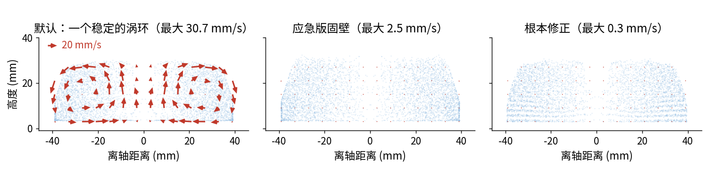
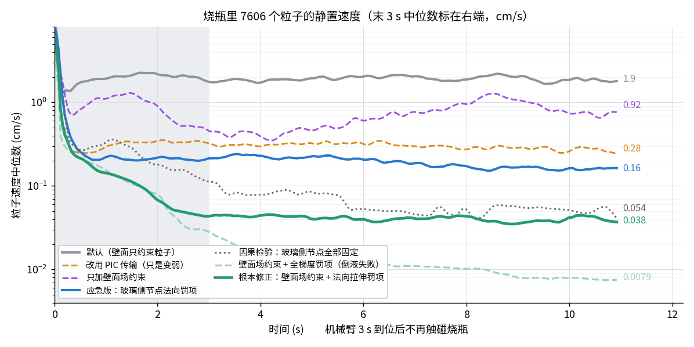
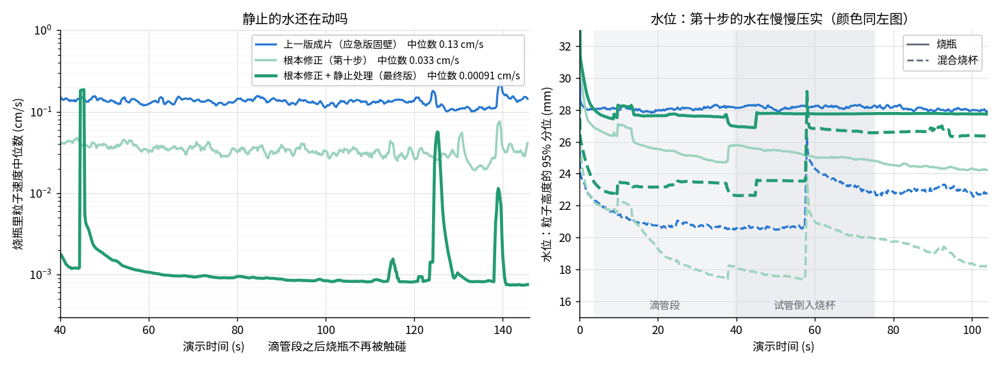

引擎改动日志：一步步把水放进 IPC 求解器
化学实验台演示里，FR3 机械臂靠指尖触觉完成滴管取液、试管倾倒、搅拌、摇匀、倒废液五段操作。 这要求液体能和薄玻璃器皿、凝胶指垫双向耦合：水推玻璃，玻璃兜住水，夹爪还能从触觉里读出被夹物体的软硬。 这一页按时间顺序记录我们对 StiffGIPC 引擎做的每一步改动：看到了什么，改了什么，怎么验证的。 每条结论都对应一次实验；被实验推翻的猜想也照实写出来。
10-19 起的复审（第 12 步以后）：把液固耦合从头再审一遍，按“先可追溯、再传输与界面、再固体映射、再滴管、最后标定”的顺序改代码；每一步的改动都列在改动清单里，方便日后回看。
全程一览
| 步 | 日期 | 改动 | 关键验证 |
|---|---|---|---|
| 1 | 10-04 → 10-06 | 外挂原型在薄玻璃上失败，改为引擎内的单体隐式耦合 | 玻璃壁 2.5–3.5 mm，比网格 5 mm 还薄 |
| 2 | 10-06 | MPM Lite 网格节点成为 IPC Newton 的未知量 | 溃坝体积守恒；静置水深 56.0 mm（理论 55.6） |
| 3 | 10-06 | 粒子成为 IPC 接触点，障碍项链式回传到网格 | 密度 0.5 的方块浮起约一半，水位按排开体积上升 |
| 4 | 10-07 → 10-08 | 倾倒对准、洒落处理、会吸液滴液的空心滴管 | 96% 倒进废液杯；试管 95–96% 倒进烧杯 |
| 5 | 10-08 → 10-09 | 全量审计：精确提速 + 6 处修复 | 完整五段 1054.8 → 403.7 分钟（2.61 倍），物理不变 |
| 6 | 10-10 | 路径追踪视频里“静止”的水面在动 | 判定为仿真问题：约 2 cm/s 的稳定环流 |
| 7 | 10-10 | 逐个排除 9 个假设 | 环流是确定性的，与噪声、播种、求解精度无关 |
| 8 | 10-10 | 根因：固壁只作用于粒子，不作用于网格 | 因果检验：0.05–0.07 cm/s，原文的跟踪 J 体积精确 |
| 9 | 10-11 | 应急版网格固壁 + 一个转置错误 + 规划避让 | 烧瓶 2.0 → 0.16 cm/s，倒液正常，完整五段重跑 |
| 10 | 10-11 | 根本修正：壁面场约束 + 法向拉伸幽灵罚项 | 静置 0.04 cm/s，体积误差 0.8%；分段验证与完整五段都通过 |
| 11 | 10-12 → 10-13 | 静止处理：随速度切换的幽灵罚项 + 求解内的静止拖曳；试管倒水改瞄准 | 静止的水 0.03 → 0.001 cm/s，水位不再下沉；完整五段通过（226 分钟） |
| 12 | 10-19 | 复审第一步：调试开关数值化、12 个裁剪/兜底计数器、体素角点静默改接的计数、张力分支反解修正 | 旧版 LIQ_NO_EXPAND=0 让 Newton ×5.8；静水 2200 步兜底全 0 |
| 13 | 10-19 | 新验收试验：固定 1 mm 薄板分隔两室，活塞只插一侧 | 改前：14 粒穿过固定板，另一侧速度中位 ×5、最大 ×300 |
| 14 | 10-19 → 10-20 | CPIC 式兼容性屏蔽：粒子只和自己这一侧的网格节点耦合；消融矩阵淘汰三个错误方案 | 穿板 0；静水对照 0.66 → 0.44 mm/s；烧瓶残差 0.125 → 0.156 mm/s，无 J 漂移 |
| 15 | 10-20 | 液→固反力导出（壁面场约束反力、ghost 反力），支撑力预算 | barrier + WFC + ghost = 水重，误差 ±0.5 %；floor_gravity 多算 2.1 % 水重 |
| 16 | 10-20 | 滴管：运动学泵隔离试验、腔压泵模式、薄壳胶头资产 | 运动学泵丢液 66/86 且零滴出；腔压泵吸液 33 粒，提升时仍脱离（未完成） |
| 17 | 10-20 | 混合切割单元：按侧拆元 + 私有固定 ghost 角点（5 轮调试后被实验否决）；确定正确原语是每侧一个节点槽位 | 偏置板串扰不降；烧瓶里容器只承担 8 % 水重；默认关闭，S2 仍为交付配置 |
1起点：为什么要把水放进引擎10-04 → 10-06
液体用 MPM 表示，按 2026 年的 MPM Lite 实现：三线性（Q1）网格、每个体素只在中心做一次积分、粒子不参与积分。 第一版是引擎外的 Python/Warp 原型，液体单向地读引擎的三角网，把器壁当作网格节点上的边界条件，这也是 MPM Lite 原文处理固壁的方式。
原型在实验台上失败了。玻璃壁只有 2.5–3.5 mm 厚，比 5 mm 的网格间距还薄，一个节点分不清自己在薄壁的哪一侧。 加厚网格、加约束带、加内部规则，每个补丁要么改变了器皿几何，要么让倾倒失效；FLIP 传输加节点边界还会漏水结块。
于是我们换了架构：把隐式 MPM Lite 直接放进 IPC 的 Newton 求解里，与固体一起单体（monolithic）求解，思路与 BFEMP（隐式 MPM + 障碍接触）一致。 粒子与三角形之间的 IPC 接触与网格间距无关，薄壁不再是问题；接触力天然双向。一个 5 ms 时间步只解一次，液体不做子步。
2网格节点成为 Newton 的未知量10-06
每一步把活动体素的网格节点写成一个只有点的 FEM 体（“节点池”）的顶点：格点位置、P2G 得到的质量与速度、预测位置 \(\tilde{\mathbf x}\) 每步重写。IPC 的增量势能里多出一项水的能量（\(\mathbf x\) 现在也包含网格节点）：
$$ E(\mathbf x) = \tfrac12\|\mathbf x-\tilde{\mathbf x}\|_M^2 + \Delta t^2\,\Psi_{\text{固体}}(\mathbf x) + B(\mathbf x) + \Delta t^2\sum_{c} V_c\,\psi(J_c) $$每个活动体素 \(c\) 是一个 8 节点的水单元。体积比由节点位移 \(\mathbf u_i\) 在体素中心的梯度给出：
$$ J_c = \det\Bigl(I + \sum_{i\in c}\mathbf u_i\otimes\nabla w_{ic}\Bigr)\,J_c^{\text{base}},\qquad \nabla w_{ic} = \tfrac{1}{4\Delta x}(\pm1,\pm1,\pm1) $$ $$ \psi(J) = \tfrac{\kappa}{2}(J-1)^2\quad (J<1),\qquad \psi(J) = 0\quad (J\ge 1) $$水只抗压、不抗拉（无张力状态方程）。能量对 3×3 的变形矩阵求 9×9 Hessian，投影成半正定，再映射到 8 个节点，得到 36 个 3×3 块，装进 FEM 的弹性装配。
验证。溃坝：10 cm 水柱坍塌的前沿速度合理，体积守恒。静置水箱：6400 个粒子装在静止的盒子里，0 个出界、0 穿透，静置水深 p95 为 56.0 mm（理论 55.6 mm），每步 10–14 次 Newton。
3粒子成为 IPC 接触点（双向耦合）10-06
MPM Lite 的传输分两跳：粒子到单元中心用三线性权重，单元中心到 8 个角节点用常数权重 1/8。合起来每个粒子挂在 27 个节点上： \(\mathbf x_p = \sum_i W_{ip}\,\mathbf x_i\)。粒子被注册成第二个只有点的体：不贡献自由度，但参与碰撞检测、CCD 和点–三角形障碍。 障碍项的梯度与 Hessian 用链式法则回传到网格节点：
$$ \frac{\partial B}{\partial \mathbf x_i} = \sum_p W_{ip}\,\frac{\partial B}{\partial \mathbf x_p},\qquad \frac{\partial^2 B}{\partial \mathbf x_i\,\partial \mathbf x_j} = \sum_{p,q} W_{ip}\,W_{jq}\,\frac{\partial^2 B}{\partial \mathbf x_p\,\partial \mathbf x_q} $$“三角形顶点–粒子”块展开成 27 个“顶点–节点”块，“粒子–粒子”块展开成 378 个“节点–节点”块。 刚体三角形顶点再由引擎原有的 ABD 装配归约到刚体自由度，所以固体通过同一组接触块感受到水：双向、隐式，没有额外的耦合迭代。
验证。一个 4 cm、密度 500 kg/m³ 的自由方块丢进水里：浸没 41–58%（理论一半），水位按排开体积上升，方块向对角线平衡姿态倾斜，和真实的半密度方块一致。
- 粒子行的动能项必须为零（每步令 \(\tilde{\mathbf x}_p=\mathbf x_p\)），否则水的惯性在能量里被算两次而梯度里没有，线搜索卡死。
- 每步开头移动粒子和节点后要重建接触对；用上一步的接触对算初始能量，每次线搜索都会减半 64 次直到放弃。
- 摩擦能量除以全局速率，速率为 0 时得到 NaN，已加保护。
- 抖动播种会产生几乎没有质量的节点，Jacobi 预条件 PCG 因此停滞：节点质量设下限 0.05 ρΔx³。
- 用对角集中或 8 节点近似代替精确的 378 块展开，Newton 次数会涨到 600–1000 次，必须保留精确展开。
- 粒子推开（push-apart）放在求解之后会穿过薄壁，因为 CCD 只保护 Newton 步：改到求解之前，并限制推开距离。
4让演示跑通10-07 → 10-08
- 倒不进废液杯，原因不在液体。早期每次运行进废液杯的水都不超过 2.4%。倾倒轨迹只按一个预测的杯沿点规划， 而真实的最低杯沿点在倾斜过程中移动 2–3 cm，抓取又偏离中心，杯沿离废液杯轴线 34–60 mm。 改成按引擎实时位姿做杯沿反馈：先用的“向误差滤波”只能消掉一半偏差，改成积分作用后误差归零，96% 的水倒进废液杯。
- 洒在桌上的水会一直滑。节点质量下限让孤立的水滴在摩擦面前重了约 10 倍，洒出的水铺成 44×48 cm 的薄层。 加了粒子–地面摩擦 0.3，并让离桌面 1.5 mm 以内的粒子停住（烧杯底在 3 mm 高处，不受影响）。
- 节点池容量在初始化时固定。第一次完整运行在倾倒时以 4913 个活动节点超出 4876 的容量而中止，默认容量改为种子节点数的 12 倍且不少于 8192。
- 会吸液、会滴液的空心滴管。新资产：6 mm 内孔、1.5 mm 玻璃壁、橡胶球。引擎加了沿管轴的“泵”：吸、悬停抵消重力、脉冲挤出。 迭代了四版：滴液脉冲期间也要保持抵消重力；先跟踪管速再加抵消项；位置搬运要在求解前执行。 后来审计发现吸入搬运会把粒子推进管壁，改成只搬运正对管口的粒子：嵌壁粒子从 15–22 个降到 0，送达量从 21 升到 29。
- 试管倒偏。试管内径 13.6 mm 不到 3 个网格，水在接近 98° 时一股涌出、带水平速度落在烧杯远侧杯沿。先加了与烧杯同样的实时管口反馈（46% → 61%），再把瞄准点改到烧杯轴线前 20 mm，升到 95–96%。
5全量审计，只落地精度不变的提速10-08 → 10-09
两份审计（液体 37 条、固体 26 条）去重后共 63 条结论。规则是每条都要“原理 + 实验”：23 条证实，14 条只证实了一半， 11 条被实验推翻，15 条只有原理（写明了不做实验的原因）。落地的改动都先证明不改变结果：
| 改动 | 怎么证明精确 | 实测收益 |
|---|---|---|
| PCG 只解“活跃前缀”：闲置的节点槽和粒子行本来就是惰性的 | 严格模式下，同一进程内 4900+ 次求解，前缀解与全长解逐位相同 | 每次 PCG 迭代 57 → 44 µs |
| 液体三元组预留移出 ×32 余量；每次 Newton 只清零接触段 | 未清零区域填 NaN 做毒化测试：无液体严格模式下 67 个记录数组逐位相同 | 装配 8.8 → 4.9 ms/Newton |
| 可证明步长不变时跳过扫掠 CCD（可选开关） | 开、关各跑 60 帧逐位相同；液体下同进程影子校验 0 不一致 | 靠近段 −17.7%（无液体）/ −8%（有液体） |
| 机械臂碰撞网格的长边细分到 50 mm 以内（几何不变） | Newton 次数、滑移、刚度估计、指力与原网格一致 | 第 4 段 −35%（无液体）/ −30%（有液体） |
最后一项是验证中的新发现：夹住物体时，接触检测的时间由最慢的一个 GPU 线程决定。手部网格上一条 186 mm 的长边，让一个线程每次查询串行做 2102 次边–边检测。 总工作量并没有变，消掉长边才是真正的解法。
审计还证实并修复了几个 bug：
- MAS 预条件下凝胶销钉全部钉错。FEM 销钉编号没有随 METIS 重排映射，每块凝胶 250 个销钉都钉在了错误的顶点上（中位偏差 9.2 mm）。
- ABD 预条件子把刚体质量算了两次。20 个刚体全部满足 P − A = M。改成精确块后物理不变，但 PCG 迭代反而多 13–15%，整段慢 2%：如实记录，保留了恢复旧行为的开关。
- 接触刚度 κ 的质量尺度被稀释。它取“总质量 / 全部顶点数”，把没有质量的刚体表面顶点也算进分母。只加密机械臂表面（几何不变），这个尺度就缩到 0.806 倍，κ 跟着变软，烧杯的刚度估计从 61.3 变成 54.7 MPa。新增配置项把这个尺度钉住。
- 滴管尖端位置偏轴 4.5 mm；试管播种有 1 个粒子起始就在玻璃里；一个计时器把约 15 帧之和标成了“每步”。
被推翻的例子：“水动起来每次 PCG 迭代要 100–300 µs”，实测 32–47 µs；“MAS 让 Newton 多 3.7 倍”，测量时销钉全错，修好后重测 Newton 最多 2 倍、整段慢 2.1 倍； PCG 容差收紧到 1e-8 在无液体时整段快 23%，有液体时反而慢 5.5%，所以液体场景不改。
6“静止”的水为什么在动10-10
用 Mitsuba 路径追踪渲染演示视频时发现，第 1 段之后再没人碰过的烧瓶，水面一直在“蠕动”。先要回答：这是渲染的问题还是仿真的问题？
| 测量 | 结果 | 说明 |
|---|---|---|
| 粒子速度中位数 | 4.8 s 时 2.01 cm/s，144 s 时 1.99 cm/s | 全程平坦，不衰减；每 40 ms 走 0.74 mm，是粒子半径的 60% |
| 速度自相关 | 40 ms 0.97，400 ms 0.54，1 s −0.29 | 相干的慢环流，不是逐步随机抖动 |
| 自由面高度 | 标准差 0.059 mm | 水位不动，动的是水面纹理 |
| 渲染：相邻两帧同一随机种子 | 静止桌面区平均差 0.33/255，水区 1.77/255 | 固定种子下静止几何不闪，变化来自几何本身 |
| 渲染：表面重建 | 重建出的水面每帧爬动 0.17 mm，粗糙度 2.3 mm | 重建分辨出了单个粒子，粒子一动水面纹理就动 |
结论是仿真问题，渲染只是把它放大。加大重建平滑长度能遮住，但水流和水滴也会被抹粗；对位置做时间平均也无效，因为运动是相干的。
7逐个排除假设10-10
实验对象是单独静置的烧瓶（7606 个粒子，机械臂 3 s 到位后再静置 8 s），每个假设各跑一次对照。 平均流场显示，静止的水其实是一个稳定的轴对称涡环：沿壁下沉约 2 cm/s，沿底向内，从中间上升 2–3 cm/s，沿液面向外。 锥形烧瓶和直壁烧杯里都一样，换随机种子后逐格相同。

| 假设 | 实验 | 结果 | 结论 |
|---|---|---|---|
| 粒子推开在注入能量 | 关掉推开 | 2.0 → 0.9 cm/s，但水慢慢被压实 | 只占一半 |
| APIC 仿射项 | PIC；仿射项 ×0.5、×0.25 | 0.28 / 0.55 / 0.39 cm/s，涡环图案相同 | 只是缩放 |
| 体积状态量的取法 | 换 4 种 J 的算法 | 位置法更差（3.2 cm/s）；跟踪 J 安静但体积压实 23–26% | 症状换了形式 |
| 节点质量下限带了重量 | 下限只加惯性、不加重量 | 2.05 vs 2.01 cm/s，涡环逐格相同 | 推翻 |
| 播种的随机抖动 | 完美格点播种 | 1.92 cm/s，11 s 内格点被打乱到同样程度 | 推翻 |
| 求解残差 | PCG 1e-8，Newton 上限 200（在 PIC、无推开的变体上） | 不变 | 推翻 |
| 贴壁层的 J 只增不减 | 跟踪 J 上限 1.0 | 贴壁层支撑 0.73 → 0.76，涡环不变 | 推翻 |
| 边界节点惯性漏压 | 边界节点加重 | 涡环弱 4 倍，但贴壁层支撑仍只有 0.68 | 只是刹车 |
| 无张力状态方程把噪声整流 | 跟踪 J + 对称能量（即原文模型） | J 不再漂移，粒子照样压实约 25% | 推翻 |
“贴壁层支撑”是贴壁 4 mm 内粒子的压力与当地静水压之比。它在所有变体里都只有 0.47–0.76：贴壁的水没有被托住，于是下沉，带出整个涡环。 最后一行最关键：原文模型里体积状态不漂，粒子却照样被压实，说明网格的变形根本没有看到粒子的挤压。
8根因：固壁只作用在粒子上，没有作用在网格上10-10
MPM Lite 在网格上保证不可压：体积比 \(J_c\) 由节点位移算出。而我们的器壁只通过 IPC 障碍作用在粒子上。 被器壁切开的单元（切割单元）有一半节点落在玻璃一侧，它们是自由的自由度：单元的压力可以靠这些节点“流进玻璃”释放掉，粒子却被障碍挡在原地。
这一个缺口同时解释了两种症状：
- 压力按粒子位置算（默认）：能看到粒子在壁边的堆积，但贴壁单元的支撑经过自由节点泄掉，贴壁层只得到 47–76% 的静水压支撑，于是下沉，形成涡环。
- 压力按原文的跟踪 J 算：网格根本看不到压缩，没有压力；粒子被障碍挡在壁和底处堆积，体积丢掉 26%。
因果检验。用一个只适用于静止烧瓶的解析几何开关，把玻璃一侧的网格节点直接固定（Dirichlet），其余不变：
| 变体 | 静置速度 | 贴壁层支撑 | 体积比 Jc | 涡环 |
|---|---|---|---|---|
| 默认（压力按粒子位置） | 2.0 cm/s | 0.73 | 1.055（发泡） | 壁面 −20 mm/s |
| 默认 + 固定玻璃侧节点 | 0.07 cm/s | 1.16 | 1.053 | 消失 |
| 原文的跟踪 J | 0.35 cm/s | 0.36 | 0.746（压实 26%） | 消失 |
| 原文的跟踪 J + 固定玻璃侧节点 | 0.05 cm/s | 1.09 | 1.0001（体积精确） | 消失 |
根因确认。之前的 J 重锚定、无张力状态方程和粒子推开，治的都是这个缺口的症状。
9应急版网格固壁（用于演示重跑）10-11
为了先把演示做完，我们给每个轴对称的刚体容器写了“内半径随高度”的轮廓，把落在玻璃一侧的节点约束起来。 第一版让这些节点很重、不受重力、切向沿用上一步的流速；第二版改成只锁法向的罚项，节点保留真实质量和重力，切向完全自由：
$$ E_{\text{wall}} = \tfrac{K}{2}\bigl(\mathbf n\cdot(\mathbf x_i - \mathbf x_t)\bigr)^2,\qquad \mathbf x_t = \mathbf x_i^0 + \Delta t\,\mathbf v_{\text{body}},\qquad K = 1000\,\rho\Delta x^3 $$两版静置都达标，但倾倒都失败：试管里的水倒不出来。最后查明是我们自己的实现错误。 ABD 刚体的状态 \(q=(\mathbf p,\mathbf a_1,\mathbf a_2,\mathbf a_3)\) 表示 \(\mathbf x = \mathbf p + R\,\bar{\mathbf x}\)，\(R\) 的行是 \(\mathbf a_1,\mathbf a_2,\mathbf a_3\)； 节点分类时我们把它们当成了列，用的是 \(R^\top\)。容器不转时 \(R\approx I\)，转置没有影响，所有静置测试都正常； 一倾倒，节点就被放进一个反向倾斜的“虚拟容器”里分类，真实腔体里的流体节点被当成壁外节点钉住。教训：只用静止物体验证不出朝向错误，必须用转动的物体验证。
| 修正后的验证（全部 5 个容器） | 默认 | 应急版固壁 |
|---|---|---|
| 烧瓶静置速度 | 1.89 cm/s | 0.16 cm/s |
| 试管倒空用时（5–95%） | 0.52 s | 0.48 s |
| 倒完后烧杯静置速度 | 2.35 cm/s | 0.32 cm/s |
| 摇匀时溅出的粒子 | 5 | 0 |
| 倒进废液杯 | 2561 / 2567 | 2567 / 2567 |
| 废液杯最后 3 s 静置速度 | 0.54 cm/s | 0.08 cm/s |
| 第 4 段墙钟时间 | 94.2 分钟 | 74.5 分钟 |
用这个配置重跑了完整五段（362 分钟，之前 403.7 分钟）。烧瓶的静置速度从 1.84–1.99 降到 0.11–0.14 cm/s，渲染出的水面每帧爬动从 0.181 降到 0.020 mm。
重跑也暴露了应急版的两个缺陷：
- 耦合是单向、滞后一步的。约束目标按上一步末的刚体速度外推。轻的试管被夹爪挤动时，管内的水像锚一样顶住它，触觉刚度估计从“刚性”变成约 4 MPa。 最终演示只给烧瓶和两个烧杯加固壁（已验证此时倒液正常、试管估计恢复“刚性”）。
- 规划打平。第 4 段两个侧抓姿态的规划代价相同，这次选到的那个让第 6 连杆擦到烧瓶。规划里加了与其他器皿保持 40 mm 的避让项，复验最近距离 40.6 mm。这是演示层的修正，与液体无关。
- 放回竖直时擦到废液杯。换了侧抓姿态后，倒空的烧杯沿倒液路径原路转回竖直时擦到废液杯沿，把它推开 16 mm、绕轴转了 44°。原路返回的余量是按干几何规划的，而杯沿反馈的水平修正恰好在这时回落。改为倒完先竖直抬高 30 mm，再在抬高后的路径上转回竖直。
- 手指擦过废液杯沿。逐帧查最近距离时发现，倒液中途夹爪的一根手指在每一次运行里都擦过废液杯沿（0.3–1.3 mm），有一次把它推开了 4.7 mm。原因是倒液高度表只让烧杯本身保持在杯沿上方 12 mm，没有算夹爪：侧抓翻转后，手指挂在烧杯下面。把两根手指和手掌也放进高度表后，倒到 60%–90% 时杯口相应抬高到 23–40 mm，手指离杯沿最近 15.3 mm。
带上这三处演示层修正的最终重跑（325 分钟）全部通过：滴管送进烧杯 33 个粒子，试管 354/354 进烧杯，废液 2952/2952、无一洒出，滴管壁内 0 个粒子；胶头 600 kPa，试管、玻璃棒、烧杯都判“刚性”；无人触碰的烧瓶和废液杯全程位移不超过 0.8 mm。
另一个现象：加了固壁后，滴管送液量在 21–33 个粒子之间波动（修复前两次都是 33–34）。滴管泵按位置搬运管口附近的粒子，不产生真实负压，原来的伪环流一直在给管口补水；水静止后，送液量取决于管口周围剩下多少水。
应急版不是根本解：逐节点锁法向不是严格的切割单元条件，斜切网格的壁仍会漏压（原文的跟踪 J 仍压实约 5%）；轮廓要逐个容器手写；耦合滞后一步。
10根本修正：壁面场约束 + 法向拉伸幽灵罚项10-11
目标：保留粒子的 IPC 障碍（不穿透、可分离、对薄壁有效），同时让网格压力看见壁面；双向、隐式、不滞后，也不需要逐个容器写轮廓。 最后的方案由两部分组成。中间走过一次弯路：第一版静置完美，却在细试管倾倒上失败。下面照实记下。
(a) 壁面场约束：场不得穿入固体
每一步，离任意固体表面三角形不到一个粒子间距的粒子，取它在该三角形上的最近点 \(\mathbf X_w\)（重心坐标 \(b_j\)）和指向流体的法向 \(\mathbf n\)。 在这个壁面点上比较流体场的位移和固体的位移：
$$ g = \mathbf n\cdot\Bigl(\sum_{i\in c} N_i(\mathbf X_w)\,(\mathbf x_i - \mathbf X_i) \;-\; \sum_{j=1}^{3} b_j\,(\mathbf x_j - \mathbf x_j^0)\Bigr),\qquad E_{\text{wfc}} = \tfrac{K}{2}\,\min(0,\,g)^2 $$第一项是包含 \(\mathbf X_w\) 的单元 8 个节点的 Q1 场，第二项是三角形 3 个顶点从步首起的位移。只罚 \(g<0\)：场不得穿入固体，分离和切向滑移都自由。 每个壁面点涉及 11 个顶点，产生 66 个 Hessian 块，追加到接触 Hessian 里；刚体三角形的顶点由引擎归约到刚体自由度。 所以这项约束对容器是双向、隐式的，没有一步滞后，对任何三角网都适用。
单独使用不够。静置速度 0.83–0.92 cm/s，原文的跟踪 J 仍压实 15%。原因是 Q1 切割单元有一个“绕壁面点转动”的模式： 玻璃一侧节点移进固体，流体一侧节点向内移，壁面点处的场纹丝不动（约束满足），整个单元却膨胀了，压力照样泄掉。
(b) 幽灵罚项，第一版：完整梯度
非贴体有限元（CutFEM）用“幽灵罚项”稳定被边界切开的单元：惩罚切割单元与邻格之间的梯度跳变，让落在区域外的自由度只能是物理场的光滑延拓。 我们先只罚了体积部分（梯度的迹），没有效果，加大 10 倍也不变，还更吵。换成完整梯度后，静置问题完全消失：
$$ E_{\text{gp}} = \tfrac12\,\gamma\,V\,\bigl\|G_c - G_{c'}\bigr\|_F^2,\qquad G_c = \sum_{i\in c}\mathbf u_i\otimes\nabla w_{ic},\qquad \gamma = \kappa $$对每一对（含壁面点的切割单元 \(c\)，与它共面的活动邻格 \(c'\)）施加。两个单元共 12 个节点，78 个 Hessian 块，Hessian 是 \(K(\mathbf w_i\cdot\mathbf w_j)I_3\)， 其中 \(\mathbf w_i = \nabla w_{ic}-\nabla w_{ic'}\)。它只惩罚相邻单元之间梯度的差：整体平移、均匀滑移和线性剪切都不受影响。 静置 0.008 cm/s，体积误差 −0.7%，各区域密度与“固定节点”的因果检验一致。
(c) 弯路：完整梯度让细试管倒不准
倾倒验证时，试管里的水按时倒空了，但几乎全部落在烧杯外面。逐帧追踪试管里的 350 个粒子，比较它们落到烧杯口高度时的位置：
| 落到烧杯口高度时 | 默认 | 应急版固壁 | 完整梯度罚项 |
|---|---|---|---|
| 落在杯口以内的比例 | 100% | 100% | 3% |
| 离烧杯轴线（中位数） | 21.7 mm | 20.5 mm | 36.1 mm |
| 向下速度（中位数） | 94 cm/s | 91 cm/s | 58 cm/s |
| 水平速度（中位数） | 31 cm/s | 33 cm/s | 44 cm/s |
试管口的瞄准轨迹在两次运行里相差不到 2 mm，所以差别出在水离开试管的方式：水流更平、更远，越过了烧杯远侧杯沿。 完整梯度罚项在静止时几乎没有代价（相邻单元的梯度差本来就接近零），流动时却相当于贴壁处一层很强的黏性。 试管内径只有 13.6 mm，不到 3 个网格，每个单元都贴着壁，于是管里的水像一整块塞子一样沿管轴滑出。罚项强度的剂量实验证实，单靠调强度两头顾不全：
| 罚项强度 γ | 静置速度 | 体积比 Jc | 试管水流落在杯口以内 |
|---|---|---|---|
| κ | 0.008 cm/s | 0.993 | 3% |
| 0.1κ | 0.012 cm/s | 0.992 | 51% |
| 0.03κ | 0.030 cm/s | 0.984 | 71% |
| 0.01κ | 0.082 cm/s | 0.975 | 99% |
粗略的尺度估计：罚项压过水的惯性的流动尺度约为 \(\ell \approx (\gamma\,\Delta x^2\Delta t^2/\rho)^{1/4}\)，γ = κ 时约 16 mm，0.01κ 时约 5 mm；试管内径正好落在这个范围里。
(d) 最终版：只罚法向拉伸
静置时要堵住的泄压模式，是玻璃一侧节点沿法向移进固体、流体一侧节点向内移，也就是切割单元沿壁面法向的拉伸。 所以只罚这一个分量在相邻单元之间的跳变，切向滑移、剪切和切向拉伸全部放开：
$$ E_{\text{gp}} = \tfrac12\,\gamma\,V\,\bigl(\mathbf n^{\top}(G_c - G_{c'})\,\mathbf n\bigr)^2,\qquad \gamma = \kappa $$法向 \(\mathbf n\) 取两单元内壁面点法向之和，Hessian 是 \(K(\mathbf n\cdot\mathbf w_i)(\mathbf n\cdot\mathbf w_j)\,\mathbf n\mathbf n^{\top}\)。 我们也试了介于两者之间的方案：罚法向位移的完整梯度 \(\|\mathbf n^{\top}(G_c - G_{c'})\|^2\)。
| 罚项（γ = κ，跟踪 J） | 静置速度 | 体积比 Jc | 试管水流落在杯口以内 | 最后落在烧杯外 | 5–95% 倒空 |
|---|---|---|---|---|---|
| （默认，无固壁） | 2.0 cm/s | 1.055 | 100% | 0 | 0.52 s |
| 完整梯度 | 0.008 | 0.993 | 3% | 341 | 0.64 s |
| 法向位移的完整梯度 | 0.018 | 0.994 | 86% | 54 | 0.68 s |
| 只罚法向拉伸 | 0.038 | 0.992 | 100% | 0 | 0.12 s |
只罚法向拉伸时，静置 0.038 cm/s（应急版 0.13，固定节点的因果检验 0.05），体积误差 0.8%，试管的水全部落进烧杯（这一次如此；换播种扰动后的结果见第十一步）。 留下的差别是倒空方式：细试管里的水要到约 98° 才一次性倒出，而默认从约 92° 开始、0.5 s 内流完。 我们的解释是，这个罚项也会阻碍水从试管上壁剥离，表现得像轻微的附着。

| 烧瓶静置 8 s | 静置速度 | 体积比 Jc | 贴壁层支撑 | 贴壁层 vy |
|---|---|---|---|---|
| 默认 | 2.0 cm/s | 1.055（发泡） | 0.73 | — |
| 因果检验：固定玻璃侧节点（跟踪 J） | 0.05 | 1.000 | 1.09 | −0.02 mm/s |
| 应急版固壁（跟踪 J） | 0.13 | 0.949 | 0.48 | −0.89 mm/s |
| 只加壁面场约束（跟踪 J） | 0.18 | 0.845 | — | −1.81 mm/s |
| 壁面场约束 + 完整梯度罚项（跟踪 J） | 0.008 | 0.993 | 0.87 | −0.07 mm/s |
| 壁面场约束 + 法向位移梯度罚项（跟踪 J） | 0.018 | 0.994 | 0.71 | −0.12 mm/s |
| 壁面场约束 + 法向拉伸罚项（跟踪 J） | 0.038 | 0.992 | 0.63 | −0.35 mm/s |
0.04 cm/s 相当于每 40 ms 走 0.015 mm，肉眼不可见。这是在可滑移的壁面下，让 MPM Lite 原文的跟踪 J 保持体积（误差 0.8%）。
用它跑完整五段（所有器皿都加约束，包括两支试管）时，静止的水比应急版还要安静三到四倍：
| 完整五段里的静止水 | 修复前 | 应急版（演示） | 根本修正 |
|---|---|---|---|
| 无人触碰的烧瓶 | 1.84–1.99 cm/s | 0.12–0.15 cm/s | 0.03–0.04 cm/s |
| 废液杯最后 3 s | 1.56 cm/s | 0.10 cm/s | 0.04 cm/s |
| 渲染水面每帧爬动（中位数） | 0.181 mm | 0.045 mm | 0.019 mm |
验证进度
| 验证项（法向拉伸罚项，所有器皿都加约束，跟踪 J） | 结果 |
|---|---|
| 静置：烧瓶 | 通过 0.038 cm/s，体积比 0.992 |
| 试管倾倒 | 通过，有差异 100% 进烧杯、0 落在外面；约 98° 时一次性倒出（默认 92° 开始，0.5 s）。后来发现这个 100% 是播种运气，换一次扰动会有 11–19 个粒子落到桌上，第十一步改了瞄准 |
| 试管的触觉刚度估计 | 通过 “刚性”，物体压入 0.09 mm（应急版加在试管上时 0.38 mm，被误判为 4 MPa） |
| 烧杯摇匀 + 倒废液 | 通过 2564/2564 进废液杯，废液杯不动，废液静置 0.034 cm/s |
| 滴管吸液 / 滴液 | 通过，有差异 滴管壁内 0 个粒子，胶头估计 619 kPa；送液 15 个粒子（应急版 21–33） |
| 完整五段 | 通过 288 分钟（应急版 325）；试管 354/354、废液 2935/2935，滴管壁内 0 个粒子，四次触觉估计与应急版相同，无人触碰的器皿位移 ≤ 0.8 mm；送液 17 个粒子 |
11让静止的水真正静下来10-12 → 10-13
根本修正之后，静止的水还剩约 0.04 cm/s 的慢环流：贴壁层往下沉，中间往上补。速度虽小，但重建出的水面在路径追踪视频里仍有细小的闪动， 每 40 ms 一帧，10% 的水面点移动超过 0.16 mm。我们想弄清楚，为什么会有一股持续的小驱动一直在推它，然后把它压住。
(a) 驱动从哪来：每一步求解都重新推一次
法向拉伸罚项只管住了切割单元沿壁面法向的拉伸。玻璃一侧“幽灵”单元的其他梯度分量仍然自由，贴壁层只得到约 63% 的静水支撑。 于是每一步网格求解都会让贴壁层下沉一点。关键在于粒子怎么动：位置按本步解出来的网格速度前进， \( \mathbf x_p \leftarrow \mathbf x_p + \Delta t\,\mathbf v_n(\mathbf x_p) \)。 对没有刚度的“软”模式，从静止出发一步也会走 \( \Delta t^2 a \)，其中 \(a\) 是残余的不平衡加速度，与粒子带进这一步的速度无关。
实验证实了这一点。只阻尼粒子带到下一步的速度，速度从 0.039 降到 0.034 cm/s，几乎没用。 每一步把慢于 3 mm/s 的粒子速度直接清零，也还剩 70%（0.027 cm/s）。所以推力是每一步重新产生的，不是攒下来的动量。
(b) 两条走不通的路
- 粒子级“休眠”：慢了 0.3 s 的粒子钉住不动，网格速度超过 3 mm/s 再放开。84% 的粒子静止了，但网格求解默认每个粒子都跟着网格走， 钉住一部分就破坏了体积平衡。没睡着的 15% 反而动得更快（p90 翻倍，个别粒子 3 s 漂了 27 mm），睡着的也被陆续吵醒。 刚体引擎按“岛”整体休眠，正是为了避免这种不一致。
- 很强的求解内拖曳（见下文，k = 100）：静止时最安静，但它对慢速流动像一个屈服应力，10° 倾斜的水面根本晃不起来。
(c) 最终做法：两项都放进隐式求解
随速度切换的幽灵罚项。每一对切割单元和相邻单元，取它们 12 个节点在步首的最大速度 \(v\)： 慢于 3 mm/s 时罚完整梯度跳变，把贴壁层托住；快于 10 mm/s 时回到只罚法向拉伸，细试管照常倒得出来；中间平滑过渡。 权重在一步之内固定，能量、梯度和 Hessian 保持一致：
$$ E_{\text{gp}} = \tfrac12\,\gamma V\Bigl[w\,\|G_c - G_{c'}\|^2 + (1-w)\bigl(\mathbf n^{\top}(G_c - G_{c'})\mathbf n\bigr)^2\Bigr],\qquad w = \mathrm{smoothstep}\Bigl(\tfrac{10 - v}{10 - 3}\Bigr) $$它罚的是速度梯度的跳变，不是速度本身，所以挡不住刚体运动和线性流动，不会产生屈服应力。
求解内的静止拖曳。速度慢于 3 mm/s 的网格节点，惯性放大 \(1+k\) 倍，目标位置同时拉向原地：
$$ m' = (1+k)\,m,\qquad \tilde{\mathbf x}' = \frac{\tilde{\mathbf x} + k\,\mathbf x}{1+k} $$步首的梯度 \(m'(\mathbf x - \tilde{\mathbf x}') = m(\mathbf x - \tilde{\mathbf x})\) 不变，重量和压力平衡照旧；压力这样的刚性模式不受影响； 软模式每步只走原来的 \(1/(1+k)\)。它和“阻尼粒子速度”的区别在于：它作用在求解里，直接减小这一步被推出去的位移。 \(k\) 随速度平滑淡出，从静止起步的运动只有驱动加速度低于约 \(0.29\,k\,v_0/\Delta t\) 时才会被拖住。 k = 20 时这个阈值约 3.4 m/s²，10° 倾斜的晃动照常发生。
| 烧瓶静置（最后 3 s） | 粒子速度中位数 | 3 s 累计漂移中位数 | 渲染水面每帧爬动 p90 | 晃动阻尼比 ζ |
|---|---|---|---|---|
| 法向拉伸罚项（第十步） | 0.039 cm/s | 0.99 mm | 0.160 mm | 0.155 |
| + 阻尼粒子速度 | 0.034 | 0.90 | — | 0.158 |
| + 每步清零慢粒子速度（对照） | 0.027 | 0.75 | — | — |
| + 粒子级休眠 | 0（84% 钉住） | 0（p90 5.0） | — | 0.147 |
| + 求解内拖曳 k = 100 | 0.0059 | 0.18 | — | 晃不起来 |
| + 求解内拖曳 k = 20 | 0.0035 | 0.10 | 0.019 | 0.160 |
| 随速度切换的罚项（替换法向拉伸罚项） | 0.0084 | 0.25 | 0.060 | 0.158 |
| 随速度切换的罚项 + 求解内拖曳 k = 20 | 0.0050 | 0.15 | 0.018 | 0.155 |
“+”表示加在法向拉伸罚项上。k = 100 的晃动测试拟合出 1 Hz、ζ = 1，也就是根本没有晃起来。单看 11 s 的静止测试，两项叠加和只加拖曳差不多；在完整五段里烧瓶静置的时间长得多，水面几乎完全静止（见下）。
(d) 顺带发现：试管倒水的落点余量不够
为了确认新做法没有影响倾倒，我们把第十步的法向拉伸罚项也换了两次播种扰动（抖动幅度 0.30 → 0.29 / 0.31）重跑试管倾倒。 结果它也有 11 和 19 个粒子落到了桌上，和新做法的 12–19 个在同一范围。第十步表里的“100% 进烧杯”其实是运气。 原因在瞄准：试管一次性倒出时，水流带着约 24 cm/s 的水平速度，在杯口平面越过杯轴约 20 mm，离内壁只剩 2–3 mm。 我们把试管口的瞄准点往回挪了 14 mm：
| 瞄准点离杯轴 | 杯口平面落点半径 p10 / 50 / 90 | 落在杯口以内 | 落到桌上 |
|---|---|---|---|
| 20 mm（原来） | 17.1 / 21.1 / 23.5 mm | 97% | 12 |
| 26 mm | 17.4 / 20.4 / 22.4 | 100% | 0 |
| 30 mm | 12.3 / 18.2 / 21.7 | 100% | 0 |
| 34 mm | 6.9 / 13.8 / 19.8 | 100% | 0 |
34 mm 时离内壁还有约 6 mm 余量，远大于播种扰动带来的 ±0.7 mm 波动；烧杯在所有扫描里都没有被碰到（位移 ≤ 0.8 mm）。
(e) 完整五段
| 完整五段 | 上一版成片（应急版固壁） | 根本修正（第十步） | 最终版 |
|---|---|---|---|
| 无人触碰的烧瓶，滴管段之后（粒子速度中位数） | 0.13 cm/s | 0.033 cm/s | 0.0009 cm/s |
| 废液杯最后 3 s | 0.10 cm/s | 0.04 cm/s | 0.002 cm/s |
| 渲染水面每帧爬动（中位数 / p90） | 0.043 / 0.254 mm | 0.015 / 0.158 mm | 0.0001 / 0.0002 mm |
| 烧瓶水位（3.5 s → 100 s） | 28.0 → 28.0 mm | 27.0 → 24.3 mm | 28.1 → 27.7 mm |
| 试管的水落进烧杯 | 354 / 354 | 354 / 354（播种运气） | 354 / 354（瞄准 34 mm） |
| 滴管送液（粒子数） | 33 | 17 | 15 |
| 墙钟时间 | 325 分钟 | 288 分钟 | 226 分钟 |
（水面用和成片相同的 SDF 方法重建，所以爬动数字与第十步表里的 splashsurf 数字不能直接比较。）

这次还发现了一个此前没测出来的问题：第十步的水在长时间运行里会慢慢压实，水位持续下降，烧瓶 100 s 内降了 2.7 mm。 之前检查体积只用了 11 s 的静止测试（体积比 0.992），所以没有发现。把残余环流压住以后，这个问题也一起消失了。
最终版的完整五段全部通过：
- 滴管壁内 0 个粒子，胶头估计 625 kPa。
- 试管的水 354/354 进了烧杯，其中 29 个贴着内壁，全部在水面以下。
- 废液 2933/2933，无一洒出。
- 试管、玻璃棒、烧杯都判为“刚性”。
- 无人触碰的器皿位移不超过 0.8 mm。
- 墙钟时间 226 分钟（第十步 288，应急版 325）。水静下来以后，每一步的求解也更省。
12复审第一步：可追溯的入口10-19
10-18 的根因复核得出一个结论：现有代码还没有从根本上解决静水漂移和真实滴管耦合，并给出了五步顺序（可追溯入口 → 传输与界面体积 → 固体映射 → 滴管 → 标定）。 10-19 起在本机 RTX 4090 上按这个顺序改代码。先确认本机能复现：固定烧瓶 11 s 静水，用 10-14 的完整环境（壁面场约束 + 幽灵罚项）得到速度中位 0.1252 mm/s，与当时记录的 0.1252 一致；不带这两项时是 2.53 mm/s，差 20 倍。以前的所有静水数字都依赖这两项，引擎默认并不开。
第一步修的都是“看不见”的东西：
- 调试开关写成 0 也生效。五个接触 Hessian 的调试旁路用“变量是否存在”判断，
LIQ_NO_EXPAND=0会静默省掉粒子接触 Hessian 的展开。实测同一场景 Newton 次数 866 → 5066；改成按数值解析后 865 / 873。 - 裁剪与兜底计数。J 裁剪、非有限值回退、域边界夹取、推开夹取、重锚定裁剪各加计数器，经
get_liquid_stats()导出，静水与分隔试验的汇总里逐步累加。静水基线 2200 步全部为 0：它不依赖任何兜底。后来加屏蔽后，计数器立刻暴露出每步上万次 J 裁剪，成了定位问题的主要线索。 - 体素角点无槽位时被静默改接到 0 号槽位（任意远处节点的位移会进入单元变形梯度）。以前这条路径碰不到，屏蔽后会触发；加了计数并改为固定 ghost 节点。
- 张力分支的参考 J 反解用了压缩分支的刚度，
k_cell_finalize改为与沉积一致的两段式反解（只影响LIQ_TENSION>0）。
13薄板分隔试验：把串扰和穿板量出来10-19
传输层的核心问题是：一块比网格还薄的固壁，两侧的水共享同一批网格节点（1 mm 板、5 mm 网格时 27 节点模板里有 12 个是共享的）。为了量化它，新写了一个验收试验：固定盒子中间一块 1 mm 固定薄板分成 A、B 两室，各装 4 cm 水；一个运动学活塞只插进 A 室。板是固定体，B 室物理上不可能有任何响应，它的任何动静都是数值串扰。
| 改前 | 穿板粒子 | B 室速度中位 mm/s | B 室 p90 | B 室最大 |
|---|---|---|---|---|
| 无活塞对照 | 0 | 0.66 | 1.45 | 3.2 |
| 温和活塞（0.02 m/s，插 1.5 cm） | 0 | 0.79 | 1.83 | 7.0 |
| 暴烈活塞（0.1 m/s，插 3 cm） | 14 | 3.49 | 12.6 | 1049 |
| 暴烈活塞，关闭粒子推开 | 3 | 6.36 | 22.6 | 978 |
暴烈活塞下 14 粒穿过了一块密封的固定板；关闭粒子推开后降到 3，说明“推开”把板两侧相距 2 mm 的粒子互相推过了板，但它不是串扰的主因。温和活塞是更干净的尺度：B 室 p90 比对照高 26 %，最大值高 2.2 倍。
14兼容性屏蔽：三个错误方案和一个可用方案10-19 → 10-20
做法来自 CPIC：每个粒子找最近的固体三角形，模板里落在壁面平面另一侧的节点视为不兼容，权重重新归一；同一个掩码用于质量/动量沉积、速度回插、位置嵌入、接触链式法则和 CCD 方向，所以这些算子彼此一致。被所有粒子都判为不兼容的“墙内”节点没有质量，成为固定 ghost，让被切割的体素保留完整单元。 质量/动量沉积改成直接写 27 节点，和原来“粒子 → 格心 → 角点”两段式在代数上完全等价（推导过），所以内部不受影响。
难的是贴壁粒子的仿射速度（它决定跟踪 J 的更新）。前两版都错了，而且错得一样：
| 方案 | 贴壁粒子的速度梯度怎么算 | 静水对照终态 J 均值 | 结果 |
|---|---|---|---|
| v1 | 对兼容节点做加权线性回归 | 1.078 | J 单向棘轮上涨 |
| v2 | 原算子，被屏蔽节点代入“壁面法向 + 流体切向”的 ghost 速度 | 1.069 | 同样棘轮 |
| S2 | 原算子，被屏蔽节点用它的实际速度（固定 ghost 即 0） | 1.008 | 干净 |
棘轮的机制：贴壁粒子的兼容节点集在法向很薄，任何对梯度的“补全”都把法向导数的噪声放大，而基线本构在 J>1 没有张力、裁剪又不对称，J 只被压回不被拉回。 五个开关的消融矩阵（固定 ghost、屏蔽沉积、梯度代入、仅速度屏蔽、幽灵罚项）把来源锁定在梯度代入上；屏蔽沉积、固定 ghost、速度屏蔽本身都干净；幽灵罚项仍然必需（关掉后两种方案都出现 8–11 mm/s 的稳态环流）。 读码又找到两条跨板的耦合路径并修掉：幽灵罚项把薄板两侧的两个切割单元配成了一对（法向相反的切割单元现在不配对）；粒子推开对板两侧的粒子也生效（一方在另一方壁面平面之后的对子不再推）。 “格心沉积也屏蔽”试过，直接塌陷（烧瓶残差 0.16 → 172 mm/s）：墙内的幻影体素正是当前方案里壁面的压力反作用，删不得。
| S2 + 对子过滤 | 穿板 | B 室中位 | B 室 p90 | B 室最大 | J 均值 |
|---|---|---|---|---|---|
| 无活塞对照（改前 0.66 / 1.45 / 3.2） | 0 | 0.44 | 1.32 | 3.3 | 1.007 |
| 温和活塞，板在格点面上（改前 0.79 / 1.83 / 7.0） | 0 | 0.69 | 4.08 | 16.3 | 1.020 |
| 温和活塞，板偏离格点面 2.3 mm（改前 0.82 / 2.06 / 9.4） | 0 | 0.56 | 2.37 | 9.0 | 1.012 |
| 固定烧瓶 11 s 静水（改前中位 0.125，J 0.999） | — | 中位 0.156，p90 0.40，Newton 更少 | 1.005 | ||
穿板归零，静水对照比改前还静，中位串扰消失；但活塞下 B 室的 p90 和最大值仍高于对照，收紧求解器容差只降 20 %，不是容差伪像。剩下的路径是“混合切割单元”：板不在格点面上时，一个体素两侧都是流体节点，共用一个体积状态。下一步（2b）把这种单元按侧拆成两个子单元，对侧角点用随固体位移的 ghost。屏蔽目前默认关闭（LIQ_CPIC=1 开启），基线不受影响。
15支撑力预算：三条力路径闭合10-20
验收矩阵要求“总支撑力等于水重”，但引擎的接触力查询只含粒子障碍项，不含壁面场约束。新加了两个导出：壁面场约束对固体顶点的反力，和体素压力对固定 ghost 的合力。固定烧瓶 11 s 终态，水重 1.166 N：
| 配置 | 粒子障碍项 | 壁面场约束 | ghost | 合计 / 水重 |
|---|---|---|---|---|
| 改前，floor_gravity = 1 | −1.185 | −0.006 | — | 1.021 |
| 改前，floor_gravity = 0 | −1.164 | −0.001 | — | 0.999 |
| 屏蔽 S2，floor_gravity = 1 | −1.074 | −0.006 | −0.090 | 1.004 |
| 屏蔽 S2，floor_gravity = 0 | −1.062 | −0.006 | −0.093 | 0.995 |
三条路径加起来与水重闭合到 ±0.5 %。两个副产品：质量下限节点也被称重（floor_gravity=1）让容器多承受 2.1 % 不存在的水重，而关掉它静水残差不变，物理基线应改为 0；屏蔽下约 8 % 的载荷落在固定 ghost 上，不会传给容器顶点，2b 的“ghost 随固体位移”会把它归还给固体。
16滴管：运动学泵的隔离试验与腔压泵10-20
先回答“滴管滴液完成了吗”。第四步的滴管泵按阶段指定吸入、持液、滴出，在统一求解之外直接搬运粒子，没有压力闭环。把它从成片里单独拿出来跑（杯子、运动学空心滴管、同样的水）：吸进 86 粒，提升时掉到 76，平移时掉到 20，滴液阶段 5 个脉冲一粒没滴出，求解器每步 2–20 s 并 43 次报 line-search 失败。成片里“送到 14 粒”依赖的是成片配置下的偶然成功。更根本的是，胶头资产是实心橡胶，根本没有可变的气腔体积，所以当时只能用搬运代替。
物理替代方案：唯一输入是气腔体积 Vcav（胶头腔 + 孔），液柱由等温气压 p = p0V0/Vair 驱动，Vair = Vcav − 孔内液体体积；气体弹簧对液柱平均轴向速度做一维隐式更新（任意步长稳定）；管尖没有液封时气体自由进出（V0 复位）。配套做了薄壳胶头资产（壁厚 1.5 mm，腔 8.3 ml，10442 四面体），日后由夹爪捏压直接给出 Vcav。数量级：捏 1 % 约 1 kPa，正好等于满孔液柱的重量，所以真实滴液需要很轻的捏压，这是物理结论不是调参。
隔离试验（先捏 8 % 入水、松开吸液、持、提、移、脉冲滴液）目前还没通过：吸力能到 −4 kPa，但孔内只进了 10–33 粒（孔容 180），单个粒子被踢到孔顶，提升时液柱脱离管尖。两个原因已经定位：被吸的液柱在表压意义下处于张力，基线本构在 J>1 无刚度会“空化”，必须用对称本构（真实水到 −100 kPa 才空化）；入口粒子的动量经共享节点被杯内静水稀释。对称本构把吸液从 14 粒提到 33 粒，稀释问题要改成节点级的压力边界。
17混合切割单元：一次被实验否决的尝试10-20
第十四步留下的问题：薄板不在格点面上时，一个体素两侧都是流体节点，两侧的水共用一个体积状态和一批自由度。第一版方案把被切单元按壁面法向分成两侧，各自一套体积/压力状态和一个体素元，对侧角点用一个钉在格点上的"私有固定 ghost"顶替。实现和调试经过五轮，每轮都靠收敛态探针定位：
| 轮 | 现象 | 探针看到的 | 修正 |
|---|---|---|---|
| 1 | 第 0 步被 CCD 拒绝（非有限） | ghost 角点坐标在写节点槽位之后才算出 | 先构元再写槽位 |
| 2 | 静水 0.8 s 就爆，J 1.24 | 左墙旁第一列流体单元的墙面节点被当成 ghost：每侧"平均壁面平面"把最近壁不同的粒子混在一起 | 角点改由各粒子自己的掩码投票 |
| 3 | 仍爆（多数投票） | 被部分粒子屏蔽的角点若判 ghost，元就丢掉一个仍有质量、仍被别的粒子跟随的自由节点 | 一致性规则：本侧无任何兼容粒子时才用 ghost |
| 4 | 仍爆 | 怀疑 PCG 的 live-prefix 截断；强制全长求解同样爆 → 排除 | — |
| 5 | 仍爆，最快的节点 0.6 m/s | 墙内的"尾巴"节点（质量 1e-10 kg）不属于任何元却仍受幽灵罚项的力 | 孤儿规则：没有元引用的活动节点本步固定 → 静水恢复平静 |
平静之后再跑验收：静水对照与第十四步相当；但温和活塞下板在格点面上时反而变差（4 粒穿板），板偏 2.3 mm 时串扰与第十四步相同；烧瓶里 J 又开始上涨，而且容器只承担了 8 % 的水重，92 % 落在固定 ghost 上。原因清楚了：私有 ghost 只在"那个角点的真实节点本来就没有质量"时才与第十四步等价；一旦真实节点仍有质量（曲壁或边角处相邻粒子的最近壁面不同，或薄板对侧的粒子），元的压力就落到固定 ghost 上而不是容器上，真实节点又被别的元驱动，两者不一致。偏置板的串扰路径是共享自由度本身，不是体积状态混合，所以按侧分元也不改善。
结论：私有固定 ghost 是错误的原语，默认关闭（代码保留，第十四步的配置仍是交付配置）。正确的做法是每侧一个节点槽位（薄壁附近的格点按侧各有一套自由度，即双速度场）：粒子只和自己这一侧的槽位传输和插值，元按侧生成，无质量的槽位按第十四步的规则固定；单侧的曲壁与容器处只有一个槽位，完全退化为第十四步。这是下一步要做的事。
18每侧一个节点槽位：实现了，还没稳住10-20
按第十七步的结论实现了双速度场：虚拟节点空间扩为 2 × 节点数，每个格点记一个参考壁面（离它最近的壁点，法向翻到正主轴方向），每个粒子按自己最近壁的法向打侧标签，
按（单元，侧）生成体素元，粒子只与本侧槽位传输、插值、嵌入；幽灵罚项的模板按侧取步长；无质量的槽位按第十四步的规则固定。开关 LIQ_CPIC_FIELDS=2（默认 1 = 第十四步配置）。
第一次打补丁时两处锚点错位（节点槽位写入的 ghost 分支、vside 包装函数）和漏掉的幽灵罚项步长已修。
快速静水检查仍然发散（A 侧中位 24.6 mm/s、最大 839 mm/s；B 侧 56 mm/s），"两侧节点 0 个"的打印是第 0 步的陈旧值。暂停：三个操作任务的复现优先（见 robotgym 页的改进轮次），之后回来用收敛态探针逐轮定位。
改动清单（10-19 → 10-20，均在引擎开发分支，未发布）
| 位置 | 改动 | 开关 / 默认 | 验证 |
|---|---|---|---|
liquid_system.cu 调试旁路 | 五个调试开关改为按数值解析 | — | 门控检查 4 组运行 |
liquid_system.cu/.cuh、sim_engine、绑定 | 12 个裁剪 / 兜底计数器，get_liquid_stats() 新增 fb_* 键；m8_hydrostatic.py / m9_divider.py 逐步累加 | 常开 | 静水 2200 步全 0 |
k_cell_finalize | J>1 分支用 κ·tension_ratio 反解 | 仅 LIQ_TENSION>0 | 代数检查 |
k_vox_data | 无槽位角点改接 0 号槽位的静默回退加计数 | 常开 | 屏蔽下为 0 |
wall_geometry / wfc_points | 最近壁点查询提前到 P2G 之前（独立掩码半径），节点绑定后移；壁点位置与 near 标志新存 | WFC 或 CPIC 开时 | 静水不变 |
k_build_mask、k_p2g_nodes、k_node_flag | 27 位兼容掩码；屏蔽后直接 27 节点沉积；无质量的被引用节点成为固定 ghost | LIQ_CPIC（默认 0）、LIQ_CPIC_P2G、LIQ_CPIC_GHOST | 消融 S1/S3/S4 |
k_g2p、位置嵌入、链式法则、CCD 方向五个核 | 统一使用重归一的掩码权重；梯度对被屏蔽节点用实际速度 | LIQ_CPIC_C 默认 0（代入方案被否决） | 消融 S2 |
k_gp_flag、k_neighbors | 法向相反的切割单元不配幽灵罚项对；壁面平面之后的粒子对不推开 | 仅 CPIC 开时 | 对照裁剪 718 → 0 |
k_p2g | 格心沉积屏蔽（可选） | LIQ_CPIC_CELL 默认 0，已否决 | 烧瓶塌陷 |
get_liquid_wall_forces、get_liquid_ghost_reaction | 液 → 固反力导出（WFC、ghost） | 常开 | 预算闭合 ±0.5 % |
set_liquid_pump_chamber、get_liquid_pump_state | 腔压泵模式（气腔体积为唯一输入） | 调用即生效 | 隔离试验未通过 |
lab_assets.build_dropper_shell | 薄壳胶头资产，含腔面与腔体积 | — | CPU 检查 |
examples/liquid/m9_divider.py、m5b_dropper_chamber.py | 新验收试验：薄板分隔、腔压滴管 | — | 本页数据来源 |
k_side_nabs / k_cell_axis / k_elem_plan / k_vox_build / k_mark_used / k_orphan_ghost，`k_p2g` 第二套沉积 | 按侧拆元 + 私有固定 ghost + 孤儿规则（第 17 步） | LIQ_CPIC_SPLIT 默认 0，已否决 | 静水平静但验收不过 |
探针 LIQ_HYDRO_PROBE | 新增粒子掩码、角点投票、第二套体积、ghost 角点、槽位表的导出 | 按需 | 第 17 步定位依据 |
现状与下一步
- 已完成并验证：液体与固体在同一 Newton 里双向隐式耦合；精确提速与 6 处修复；静止水的根因；应急版固壁和三处演示层修正；根本修正（壁面场约束 + 法向拉伸罚项）；静止处理（随速度切换的幽灵罚项 + 求解内的静止拖曳）和试管瞄准修正。
- 最终演示：根本修正 + 静止处理，所有器皿都加约束（包括试管），用原文的跟踪 J，226 分钟跑完五段全部通过；静止的水约 0.001 cm/s（第十步 0.03，应急版 0.13），水位不再下沉。
- 还没解决：静止拖曳对很慢的流动相当于一个弱屈服（k = 20 时，约 3.4 m/s² 以下的驱动会被拖慢，而不是被挡住）；细试管里的水倒出得偏晚、偏急；滴管泵按位置搬运，送液量受水的状态影响；两侧都有水的薄壁（插在烧瓶里的滴管玻璃管）需要一个单元承载两块互不连通的流体，要用虚拟节点或界面积分； 修好以后计划回到原文的跟踪 J 加对称能量，去掉 J 重锚定、无张力状态方程和粒子推开这些补丁；滴管泵从“按位置搬运”换成管口的压力或速度条件。
- 复审（10-19 → 10-20）：可追溯入口、薄板分隔试验、兼容性屏蔽（S2 版）、支撑力预算、腔压泵与薄壳胶头都已落地并有实验；混合切割单元的第一版（私有 ghost）被实验否决，正确原语定为每侧一个节点槽位；仍未完成：每侧节点槽位（第十八步，已实现、未稳定）与 ghost 随固体位移（2b）、滴管的节点级压力边界与胶头气腔能量、壁面场约束的 body 排除与多环境过滤。屏蔽和腔压泵都还不是默认行为。
参考文献
- X. Feng, Y. Chen, C. Yu, H. Su, D. Terzopoulos, Y. Yang, J. Masterjohn, A. Castro, C. Jiang. MPM Lite: Linear Kernels and Integration Without Particles. ACM TOG 45(4), SIGGRAPH 2026. mpmlite.github.io
- X. Li, Y. Fang, M. Li, C. Jiang. BFEMP: Interpenetration-free MPM–FEM coupling with barrier contact. CMAME 390, 2022. 隐式 MPM + 障碍接触，与我们的架构最接近。arXiv
- C. Batty, F. Bertails, R. Bridson. A fast variational framework for accurate solid-fluid coupling. SIGGRAPH 2007. 切割单元的体积分数与变分压力。
- Y. T. Ng, C. Min, F. Gibou. An efficient fluid–solid coupling algorithm for single-phase flows. JCP 2009.
- A. Robinson-Mosher, T. Shinar, J. Gretarsson, J. Su, R. Fedkiw. Two-way coupling of fluids to rigid and deformable solids and shells. SIGGRAPH 2008.
- Y. Fang, Z. Qu, M. Li, X. Zhang, Y. Zhu, M. Aanjaneya, C. Jiang. IQ-MPM: An interface quadrature material point method for non-sticky strongly two-way coupled nonlinear solids and fluids. ACM TOG 39(4), 2020. code
- X. Li, M. Li, X. Han, H. Wang, Y. Yang, C. Jiang. A Dynamic Duo of Finite Elements and Material Points. SIGGRAPH 2024 Conference Papers. doi
- E. Burman. Ghost penalty. C. R. Acad. Sci. Paris, Ser. I 348, 2010；E. Burman, S. Claus, P. Hansbo, M. G. Larson, A. Massing. CutFEM: Discretizing geometry and partial differential equations. IJNME 104(7), 2015.
- N. Molino, Z. Bao, R. Fedkiw. A virtual node algorithm for changing mesh topology during simulation. SIGGRAPH 2004.